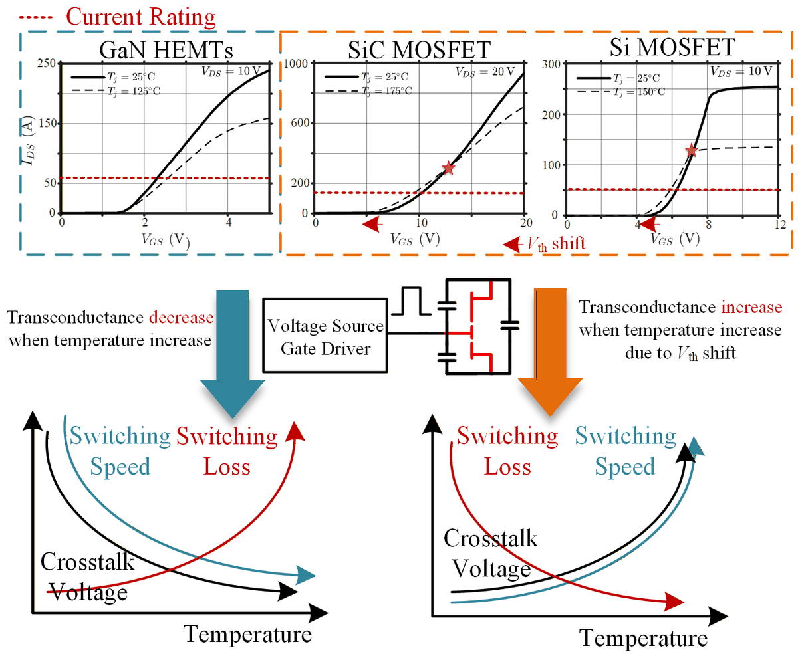
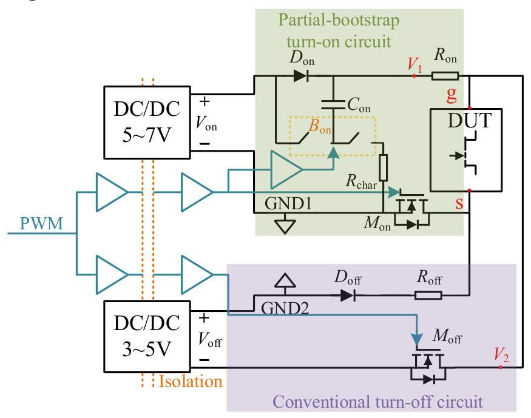
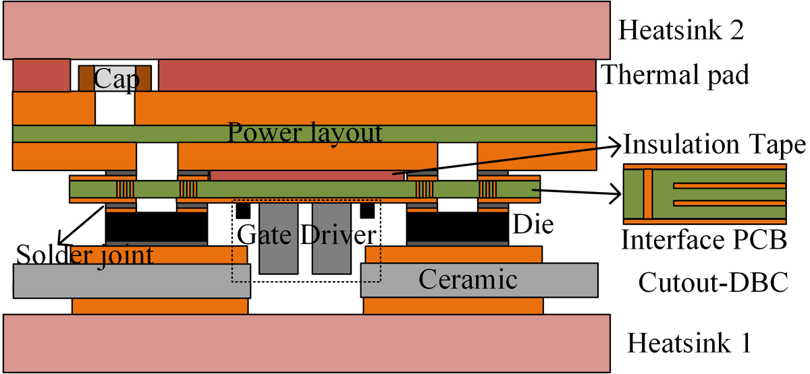

Research
Packaging and gate-drive design methods for high-current GaN power modules in 800 V data-center and EV systems.
A GaN HEMT switches in a few nanoseconds, but only if its gate loop and its package let it. My research treats the die, the gate drive, and the module as one design problem, in two connected thrusts.
1. Gate drive for GaN gate-injection transistors
CoolGaN 650 V G5 GIT · partial-bootstrap gate driver (PBGD) · NTC temperature-adaptive gate-resistor array · double-pulse test platform
Infineon's CoolGaN 650 V G5 devices are gate-injection transistors (GITs): the p-GaN gate behaves as a diode that must be held on with a steady current and switched through a few-nanosecond transition without ringing. I design gate-drive circuits built around that gate: a partial-bootstrap gate driver (PBGD), an NTC-based temperature-adaptive gate-resistor array that suppresses crosstalk and keeps switching speed up as the module heats, and a double-pulse test (DPT) platform for characterizing switching loss, dv/dt, and gate-loop parasitics.
{kind=link}

{kind=link}

2. Multi-chip GaN power modules
650 V / 400 A half-bridge · paralleled GaN dies on DBC · ultra-low parasitics · dynamic current sharing · via-in-pad interconnect
Reaching the hundreds of amperes needed by traction inverters and rack-level converters means several GaN dies must switch in parallel as one device. I packaged a 650 V / 400 A GaN half-bridge power module with ultra-low parasitics on a direct-bonded-copper (DBC) substrate: a symmetric layout for balanced dynamic current sharing, verified with LTspice and Ansys Q3D parasitic extraction; thermal design for robustness under high-current operation; and via-in-pad interconnects between the gate-drive board and the dies, with design guidelines for their thermal and electrical performance.
{kind=link}

Where this goes
Two applications set the targets: 800 V DC power delivery for AI data centers, where rack-level converters must move kilowatts per module, and 800 V electric-vehicle power conversion, where traction and charging need high-current switches that stay efficient at high temperature. Both need GaN modules whose package does not undo the speed of the device. The module and gate-drive work is part of a $5M U.S. Department of Energy Vehicle Technologies Office (VTO) project (2023–present).
Methods and tools
- Double-pulse testing (DPT) of GaN GITs and modules
- LTspice simulation with vendor device models; parasitic extraction in Ansys Q3D
- Thermal modeling of DBC and via-in-pad structures
- Die and device characterization on a probe station
- PCB and module design for multi-chip layouts
Earlier work: energy harvesting (M.S., 2020–2023)
At Huazhong University of Science and Technology I worked on electromagnetic vibration energy harvesting and the micro-power converters that go with it: non-uniform planar coils for higher output power, fully self-powered maximum-power-point tracking, and multi-input AC–DC converters for combining harvesters. That work appears in IEEE Transactions on Power Electronics, IEEE Transactions on Magnetics, IEEE Transactions on Industry Applications, and at ECCE; see Publications.